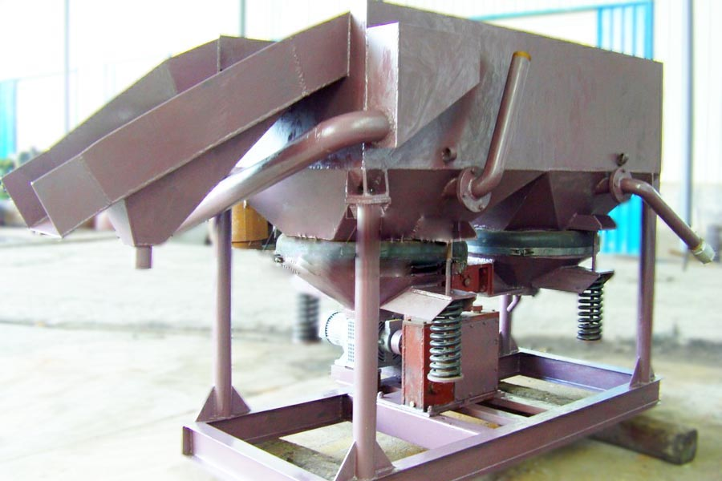

- Home >
- benefication plant >
- Bentonite mining Processing Plant

Construction waste crushing production line

Mobile construction waste crushing station for urban construction waste crushing.
Bentonite mining Processing Plant
Bentonite mining Processing Plant beneficiation methods
Jig beneficiation belong to the deep groove sorting operation, it is water as beneficiation medium, utilizing the difference in specific gravity selected mineral gangue, sorting, jigger mostly diaphragm, stroke and stroke rate based on the proportion of selected minerals , can be flexibly adjusted widely used tungsten, tin, gold, hematite, limonite, manganese, titanium, antimony, lead, tantalum, niobium and other metal gravity beneficiation.
Bentonite mining Processing Plantger have many models. AM30 jig jig is a large particle. Widely used in tungsten, tin, gold, hematite, limonite, manganese, titanium, antimony, lead, tantalum, niobium and other metal gravity beneficiation. It can produce LTP34 / 2, LTA55 / 2, LTA1010 / 2, LTC-69 / 2,2LTC79 / 4,2LTC-912/4 and other models jigger according to user requirements.

6109 Keystone trapezoid jig jig, the handling capacity per hour 20-30T.
Sawtooth JT1070-2 Jig with saving water and energy saving and improve the advantages of fine-grained mineral recovery, widely used in tungsten, tin, gold, iron, manganese, titanium, adze, chromium, sulfur and various alloys smelting slag extraction of metals and the like.
LTA-1010/2 jigger is mainly used for processing tungsten, tin, antimony ore beneficiation.
LTP34 / 2 jigger widely used in tungsten, tin, gold, iron, lead, zinc, manganese and other heavy metals jig beneficiation.
Desulfurization Jig technical parameters
| Specification | count | Sieve area | Feed size (mm) | Production capacity (t/h) | Stroke (mm) | Impact times | Additional water (t/h) | Water pressure | Electric motor | Weight(kg) | |
| Model |
Power (KW) |
||||||||||
| 100×150 Diaphragm Jig | 1 | 0.015 | -3 | 0.018-0.6 | – | 420 | – | 1-1.5 | Y80L-4 | 0.55 | 130 |
| 300×450 Dual chamber diaphragm jig | 2 | 0.27 | -12 | 3-6 | 0-26 | 322 | 2-4 | 1-1.5 | Y90S-4 | 1.1 | 745 |
| 1000×1000 Under Dynamic Cone Jig | 2 | 2 | 1-5 | 10-25 | 0-26 | 200-350 | 60-80 | 0.6-2 | Y100L-6 | 1.5 | 1700 |
| 370×360 By acting cone diaphragm jig | 2 | 0.274 | 6 | 1-3 | 5-25 | 200-250 | 2-5 | – | Y90S-4 | 1.1 | 240 |
| Trapezoidal side moving diaphragm type Jig | 3 | 2.7 | -3 | 12.5-37.5 | 13-21 | 170-230 | 60-90 | 2 | Y90S-4 | 1.1 | 2000 |
| 670×920 Jig | 2 | 1.44 | 4-8 | 7-10 | 18-24 | 240-300 | / | / | |||
Desulfurization jigger works
Desulfurization jigger equipment belonging to the deep groove type selected. All jigger has jigging chamber. Encouraging the movement of the water discharge mechanism for institutions and products. Jig indoor sieve by the punching steel braided mesh or grate bars made of water flow through the sieve into the jigging chamber should be raised so that the bed is not the height and slightly loose state, density of particles due to local and settling velocity pressure into the bottom of a large, low density particles are transferred to the upper layer. When the water drops, high density fine particles can also gradually close the gap into the lower bed complement agitation hierarchical density of water movement in the early adoption agency piston, the piston chamber jigging chamber provided in the side, the lower part of the communication , driven by the eccentric link mechanism up and down movement of the piston.
Leave Me A Message, Now
If you have any questions regarding equipment prices, production line configuration or other problems, you can send a message to us, we will contact you soon.